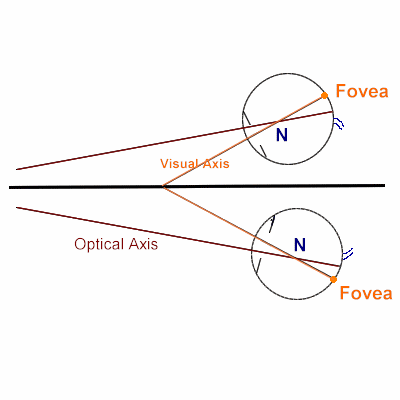

Angle
* Định nghĩa:
+ Góc.
+ Angle alpha: góc alpha là góc tưởng tượng được tạo ra ở đỉnh giác mạc giữa trục thị giác và trục quang học ở mỗi mắt

Hình: Góc Alpha, trung bình khoảng 5° ở người lớn
+ Angle of Altitude
+ Angle of Anomaly
+ Apical Angle
+ Angle of Azimuth
+ Brewster's Angle
+ Contact Angle
+ Angle of Convergence
+ Total Angle of Convergence
+ Critical Angle
+ Angle of Deviation
+ Angle of Divergence
+ Drainage Angle
+ Angle of Elevation
+ Angle eta
+ Angle of Filtration
+ Anterior chamber Angle: góc tiền phòng
+ ~ closure glaucoma (ACG)
+ ~ gamma: là góc tưởng tượng được tạo ra ở tâm xoay của mỗi mắt giữa trục quang học và trục định thị.
+ ~ Kappa: là góc được tạo ra ở đỉnh giác mạc giữa trục thị giác và đường đi qua chính giữa đồng tử.
+ ~ Lamda: là góc được tạo ra ở chính giữa mỗi mắt bởi trục thị giác và trục quang học.
+ ~ of deviation: góc lác, góc di lệch.
+ ~ of incidence: góc tới.
+ ~ of refraction: góc khúc xạ